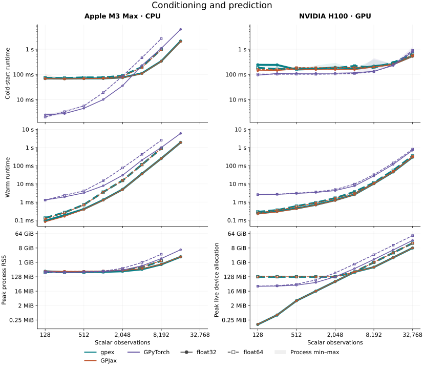
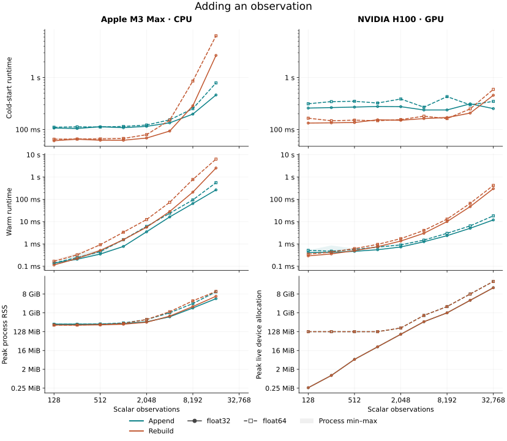
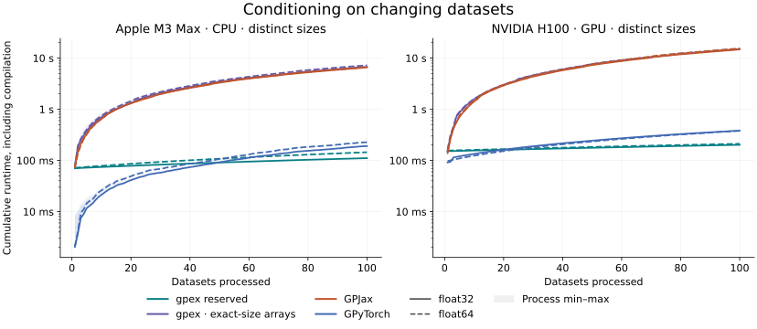
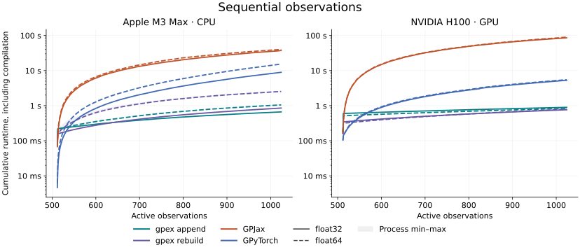
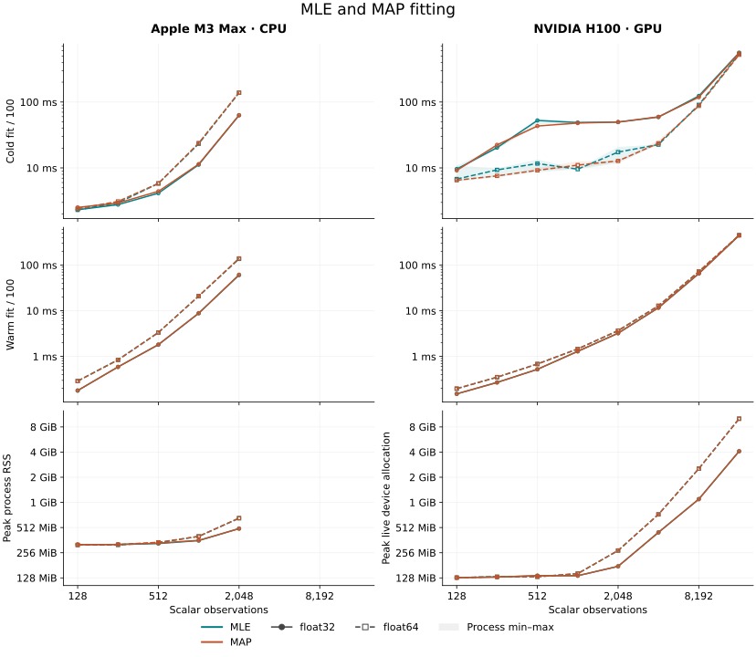
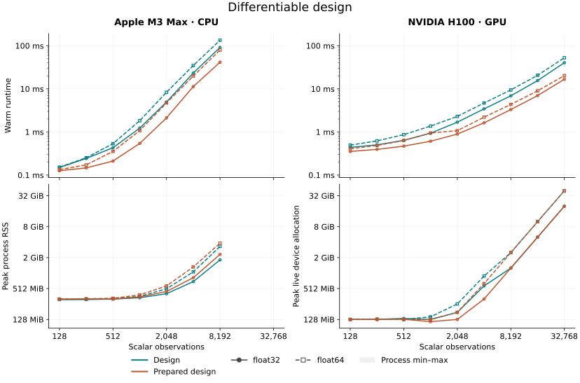
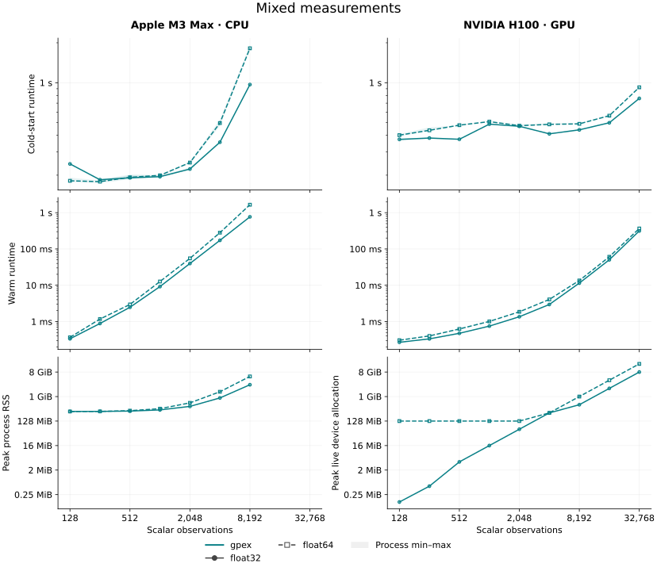
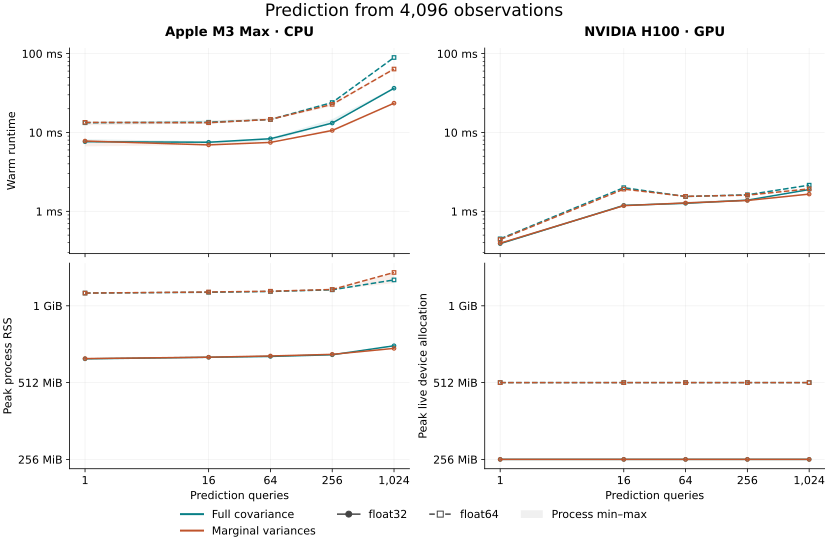

Performance
These benchmarks measure conditioning, posterior updates, fitting and prediction on an Apple M3 Max CPU and an NVIDIA H100 GPU. We first measure individual operations, then follow changing datasets and sequential observations to include the cost of compilation over a complete workflow.
There are two useful timings:
- Cold start: tracing, compilation and the first execution of a workload in an initialized runtime.
- Warm runtime: execution after compilation. New data can use the same compiled function when array shapes, dtypes and static configuration stay the same.
Before timing, a tiny unrelated problem initializes the numerical libraries. That initialization, Python startup and input construction are excluded. Target compilation is fully timed, with persistent compilation caching disabled. CPU and GPU results appear side by side. Colors identify methods, solid lines show float32 and dashed lines show float64. Light bands show the range across three independent processes. Quoted examples use the recommended float64 precision. Curves stop at sizes chosen to keep runtime and memory use practical.
Conditioning and prediction
Start with N function-value observations and predict the mean and covariance at one point. This measures covariance construction, dense factorization and prediction together.

At N = 32,768 on the H100, warm runtime is 345 ms for gpex, 320 ms for GPJax and 817 ms for GPyTorch. Peak device allocation is about 16, 16 and 48 GiB.
Adding an observation
Once a posterior is available, adding an observation need not repeat the full factorization. Append updates the existing Cholesky factor. Rebuild conditions from scratch on the complete dataset. Both paths then predict at one point. The initial posterior is prepared outside timing.

result = posterior.append(Locations(points), values, block="values").predict(query)
result = gp.condition(complete).predict(query) # rebuild
The warm-runtime row shows the cheaper factor update, while the cold-start row shows how much compilation adds to the first call. Each point uses storage for N+1 observations and measures one addition. To see what happens over many additions, we also need to account for compilation reuse.
Conditioning on changing datasets
With compact datasets, growing the arrays changes their shapes and can trigger another JAX compilation. gpex's fixed-capacity observation blocks reserve storage and track the number of active observations. Unused slots do not affect the posterior. Keeping the same block structure, capacities, dtypes and query shapes lets successive datasets reuse the compiled conditioning function.
This benchmark isolates that benefit: every call builds a new posterior from scratch. Extra capacity costs memory and computation because the factorization covers the reserved system. It can still save time when it avoids compilation for each new dataset size.

condition_and_predict = eqx.filter_jit(
lambda gp, dataset, query: gp.condition(dataset).predict(query)
)
for dataset in datasets:
result = condition_and_predict(gp, dataset, query)
jax.block_until_ready(result)
Each curve processes 100 independent datasets with 16–512 observations and predicts one value after each conditioning call. Every dataset size is distinct. Reserved gpex datasets keep capacity 512. “gpex · exact-size arrays” sets capacity to the actual number of observations. GPJax and GPyTorch also use arrays of that length. Cumulative time includes compilation and excludes input construction and validation.
Sequential observations
Now keep the observations collected so far and add one at a time. Fixed capacity reuses compilation, while posterior append also reuses the factor. Comparing append with reconditioning shows the additional benefit of the factor update once compilation can be reused by both methods.

@eqx.filter_jit
def append_and_predict(posterior, points, values, query):
posterior = posterior.append(Locations(points), values, block="values0")
return posterior, posterior.predict(query)
Starting from 512 observations, add one observation and predict one value at each step until there are 1,024 observations. Both gpex methods reserve capacity 1,024. Append updates the factor, while rebuild conditions again on the updated dataset. GPJax reconditions on growing arrays. GPyTorch uses its incremental fantasy-update API. Totals include initial conditioning, every prediction and compilation.
In float64, the complete gpex append workflow takes 1.05 s on CPU and 0.83 s on the H100. Reconditioning takes 2.53 s and 0.79 s respectively. At these sizes, GPU append and reconditioning have similar total cost.
MLE and MAP fitting
Fitting changes the kernel parameters, so each objective evaluation must account for a different covariance matrix. Here we optimize variance and lengthscale for 100 Adam steps with fixed observation noise. MAP also includes Gamma priors.

objective evaluates negative_log_marginal_likelihood(*model) for MLE or
negative_log_posterior(*model) for MAP. Both timing rows show complete
100-step fit time divided by 100. Cold time includes compilation, amortized
across those 100 steps. Warm time excludes it. At N = 16,384 in float64 on
the H100, warm MLE and MAP each take 447 ms per average step.
Differentiable design
Experimental design compares proposed measurements before their outcomes are known. We evaluate the remaining gradient variance at the origin after four proposed value measurements, then differentiate it with respect to their eight coordinates. Ordinary design appends the proposal to the conditioning state. Prepared design caches the fixed target query and evaluates its variance reduction directly. Initial conditioning and query preparation are outside timing.

jax.value_and_grad(design)(points, conditioning, query)
jax.value_and_grad(design_prepared)(points, prepared, variance)
At N = 32,768 on the H100, warm objective-and-gradient evaluation takes 52.6 ms for ordinary design and 20.2 ms for prepared design.
Mixed measurements
The same conditioning operation can combine values, derivatives and averages. Here the dataset contains approximately equal numbers of function values, first derivatives and box averages with half-width 0.15. N counts scalar measurements across all three types.

Each call conditions on the complete dataset and predicts one value. Warm runtime is 366 ms for N = 32,768 on the H100 and 1.65 s for N = 8,192 on the CPU.
Prediction batches
Keep the posterior fixed and vary the number of query points. Full prediction returns the joint query covariance. Marginal prediction returns individual variances without constructing that full matrix. Conditioning on 4,096 observations happens before timing.

result = posterior.predict(query) # mean and full covariance
result = posterior.predict_marginals(query) # mean and marginal variances
On the H100, one query takes 0.45 ms for full covariance and 0.44 ms for marginal variances. At 1,024 queries, warm runtime is 2.15 ms and 1.93 ms respectively. Peak memory includes the posterior.
Hardware and timing
| Setting | Configuration |
|---|---|
| CPU | Apple M3 Max, 14 cores, 36 GiB unified memory |
| GPU | NVIDIA H100, approximately 93 GiB device memory, 32 allocated host cores |
| Python | 3.12.11 on CPU, 3.12.13 on GPU |
| Software | JAX/jaxlib 0.11.2, cholops 0.2.1, GPJax 1.0.0, PyTorch 2.14.0, GPyTorch 1.15.2 |
| Model | Zero-mean RBF GP, variance 1, lengthscale 0.8, noise variance 0.05 |
| Arithmetic | Separate float32 and float64 runs, highest matrix-multiplication precision |
Regression uses evenly spaced inputs on [-4, 4] and values from
sin(1.7*x) + 0.1*cos(3.1*x). Kernels, input dimensions, observation geometry,
noise and prediction batch size can all change the cost.
Each process first runs Cholesky factorization, triangular solves and matrix multiplication on an unrelated seven-row problem. This loads numerical libraries without compiling the measured workload. Initialization is recorded separately and excluded from all timing curves. Cold start therefore represents an existing application encountering a new workload or array shape, not launching Python.
The single-operation plots show cold and warm timing separately where indicated. Append and rebuild also show both timings. Design and prediction plots show warm execution from prepared state.
Each ordinary point is the median of three independent process medians. Each process measures 20 synchronized warm calls, five complete fits, or two updates, depending on the workload. Cold timing uses one first call per process. Light bands show the process min–max range, not a confidence interval. Complete workflows have three process samples and include compilation in their cumulative timings. GPyTorch runs eagerly, so its cold time is the first execution without a separate compilation phase.
CPU runs use library-default threading. The benchmark harness synchronizes JAX results and runs numerical checks outside timing. Single-operation conditioning uses exact capacity. Append reserves one additional observation, and ordinary design reserves the four proposed observations.
Memory is the largest recorded peak across the three processes. CPU memory is peak process RSS, including setup and compilation. GPU memory is peak live device allocation, excluding host memory and unused pool capacity. Both use the same scale across precisions within a figure. The initialization pass can contribute to the recorded peak.
Training jitter is 1e-6 in gpex and GPJax. GPJax also uses predictive jitter of 1e-6.
GPU runs use CUDA 13 with NVIDIA driver 595.91.07 or 615.71.09, depending on the
allocated node. The host CPU is an AMD EPYC 9554. Driver and node differences
can affect compilation and runtime. Within each precision, related workloads
and their comparison libraries run serially on the same allocated GPU.
Different groups can use different nodes, so small differences across groups
should not be interpreted as controlled comparisons on identical systems.
Each job stages the compiler, runtime and source on node-local storage before
measurement. Staging is excluded from the curves. Every worker
disables xla_gpu_experimental_enable_fusion_autotuner
to avoid expensive fusion candidate compilation.
GPJax is pinned to commit 964bad77483e3c694f116d666d21617a1260208b.
Reproduce the measurements
Install the locked comparison dependencies and profile a smaller grid locally:
uv sync --locked --all-groups
XLA_FLAGS=--xla_gpu_experimental_enable_fusion_autotuner=false \
JAX_DEFAULT_MATMUL_PRECISION=highest \
uv run --frozen --group comparison python benchmarks/run.py \
--workloads dense gpjax gpytorch --sizes 256 1024 4096 \
--dtype float64 --process-samples 3 --repeats 20 \
--output results/local.json
uv run --frozen python benchmarks/plot.py --results results/local.json \
--output-dir results/figures
Repeat with --dtype float32 and a separate output path for single precision.
The benchmark runner documentation
describes workloads, settings, numerical checks and report fields.
These figures measure library source 5ffd0bff6d9ec8ba75f181ecccb7ecdb67568a2a.
The profiling branch contains the campaign plan, plot generator and compact
measurements in profiling/results/4e5cada.json. CPU measurements use profiling
revision 683bade, and GPU measurements use 4e5cada. Their library source,
locked dependencies, scientific workloads and timing protocol match.